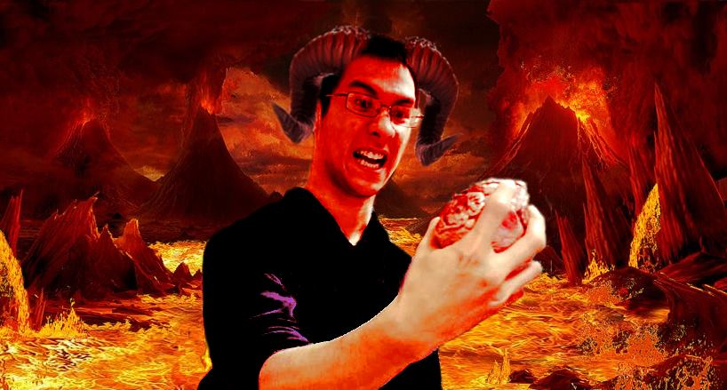

Hollie

^Dette er Hollie^
Hollie har ikke noe peiling hva han skive on, men det stopper ikke han fra å gjøre sitt beste!
Hollie er en simple mann som er glad i memes, アニメ og video games. Hollie er med som medlem, og som styret, i flere undoms orginasasjoner i Bergen. Han er styreleder i orginasajonen Regnteateret som er medlem av Hyperion. Regnteateret er en ungdomsorganisasjon som ser til å gi ungdommer en fritids aktivitet med å se på film og TV serier og analysere de etterpå.
FACT TIME!
- Diablo 1 var det første spillet Hollie noen gang spilte ferdig.
- World of Warcraft og The Binding of Isaac er Hollie sine to favorittspill.
- Hollie kan spille (Middels Dårlig) 3 instrumenter: Gitar, Piano og Trombone.
- Hollie lærte seg å spille trombone for å imponere en jente. Jenten var døv. Hollie fant dette ut først etter han lærte seg å spille trombone.
- Hollie sin favoritt-anime er Shaman King.
- Hollie var født på Mon Health Preston Memorial Hospital i Kingswood WV.
- Hollie kjente Brage fra før dette prosjektet.
Min Stilling i Gruppen
Jeg er en medlem og meme provider for gruppen.